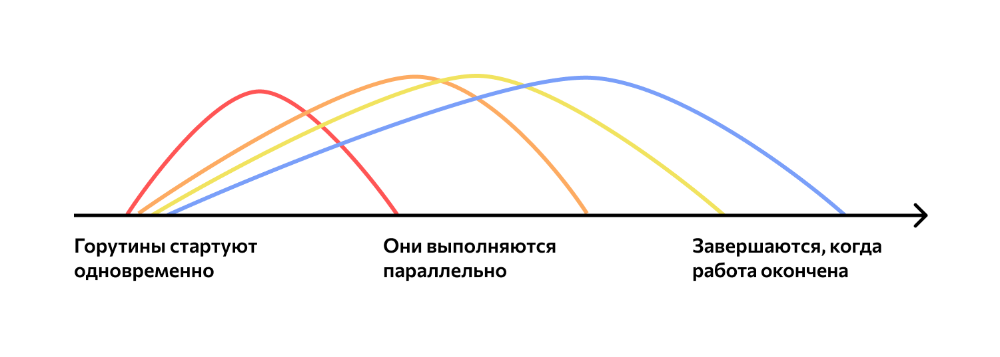

Итак, как этим чудом техники пользоваться? Нет, с вами все в порядке и вы не вернулись на 40 лет назад, просто тут интерфейс сложый. В первую очередь вам надо ввести выражение. (2+2) подойдет лучше всего.
Потом введите значение для таймера - двух-трех секунд будет достаточно.
Дальше нажмите кнопку "Отправить на расчет" У вас включится таймер. Сразу после завершения таймера появится ИД выражения и можно нажимать кнопку "Получить результат"
Вам вернется ваше выражение, время, когда оно было выполнено и долгожданный ответ! Кроме того, рядом находится кнопка "Все результаты". Она ведет на страницу с историей поиска. Там вы уивдите кнопку "Вызвать историю". Нажмете на нее и та-да-а-а-амм! увидите историю ваших запросов! (и не только ваших))
Пожалуйста! Не ломайте то, что и так нормально работает. Очень надеюсь на понимание. Я не знаю какие будут требования, но надеюсь, что вы не будете намеренно крромсать мой код. Он и так наапоминаетт франкенштейна))
А работает все примерно так: 
Нормальный техниеский readme есть на гитхабе))